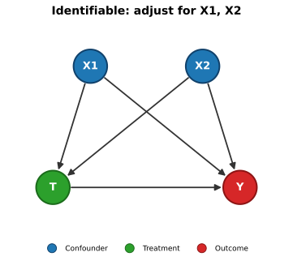
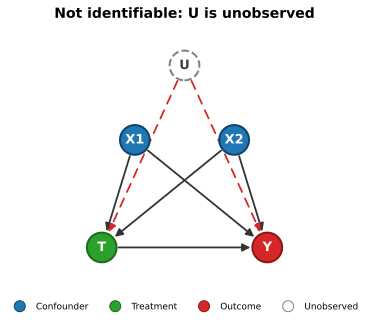
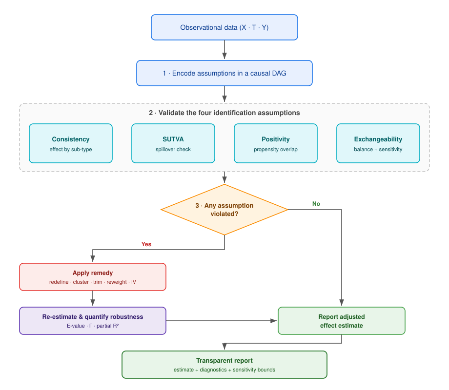

import matplotlib
if not hasattr(matplotlib.RcParams, "_get"):
matplotlib.RcParams._get = dict.get
Observational Data#
Most data available to an actuary is observational: policyholders, patients, or drivers are not randomly assigned to a treatment (a wellness programme, a discount, a new pricing rule). Instead, who receives the treatment is driven by self-selection, eligibility rules, or underwriting decisions — the very factors that also influence the outcome. This is what makes naive comparisons misleading.
This notebook walks through the practical workflow for turning observational data into a credible causal statement. Using a synthetic insurance-style dataset, we:
Encode our assumptions in a causal graph (DAG), exported as embeddable
*.svgfigures.Validate each of the four identification assumptions — Assumption 1, Assumption 2, Assumption 3, and Assumption 4 — graphically and statistically, using the diagnostics and sensitivity tools from Sensitivity Analysis.
Show what to do when an assumption fails, mapping each violation to a concrete remedy (trimming, overlap weighting, sensitivity analysis) following Biases, De-biasing, and Fairness.
The goal is a reusable checklist: before reporting any treatment effect from observational data, an actuary should be able to point to the diagnostic that supports — or qualifies — each assumption.
The Identification Workflow#
Recall from Assumptions that an observational study can be treated as a conditionally randomized experiment only if four assumptions hold. Each one can be probed — some directly from data, others only indirectly:
Assumption |
What it requires |
How we validate it here |
|---|---|---|
The treatment is well-defined (one version) |
Re-estimate the effect by treatment sub-type |
|
No interference between units |
Correlate control outcomes with neighbours’ treatment intensity |
|
Every covariate profile can receive both arms |
Propensity-score overlap (box / mirror plots) |
|
No unmeasured confounding given \(X\) |
Balance (SMD / Love plot) + sensitivity analysis |
The first three leave detectable footprints in the data. The fourth — exchangeability — is fundamentally untestable, so we instead ask how robust our conclusion is to a hypothetical unmeasured confounder (E-values, partial \(R^2\), Rosenbaum bounds, placebo tests).
When a check fails, we reach for the matching tool from the de-biasing toolkit (Biases, De-biasing, and Fairness): restrict (trim to the overlap region), reweight (overlap weights), model the structure (DAG-guided adjustment), or report a sensitivity bound.
import os
import warnings
import networkx as nx
import matplotlib.pyplot as plt
import plotly.graph_objects as go
from plotly.subplots import make_subplots
import numpy as np
import pandas as pd
from scipy.stats import ttest_ind
import plotly.graph_objects as go
import plotly.subplots as sp
from scipy.special import expit
from IPython.display import SVG, display
from utils import *
import plotly
np.seterr(all="ignore")
warnings.filterwarnings("ignore", category=RuntimeWarning)
plotly.offline.init_notebook_mode(connected=True)
# Folder for the exported causal-graph SVG figures
FIG_DIR = os.path.join("figs")
os.makedirs(FIG_DIR, exist_ok=True)
A Synthetic Insurance Example#
We simulate \(N = 1000\) policyholders enrolled (or not) in a voluntary wellness programme (\(T\)). Ten covariates \(X_1, \dots, X_{10}\) describe each policyholder (age, risk indicators, etc.), and the outcome \(Y\) is a cost/health score we hope the programme improves. Because the data is synthetic, we know the ground truth — the true average treatment effect is ATE = 5.0 — which lets us check whether each diagnostic behaves as expected.
We deliberately build in the imperfections an actuary meets in practice:
Two propensity regimes: a good one where enrolment depends only mildly on covariates (positivity holds), and a violated one where certain profiles are almost always or never enrolled (positivity fails).
An unobserved confounder \(U\) that drives both enrolment and the outcome but is not in the covariate set — the source of potential exchangeability violations.
A treatment sub-type (two delivery modes of the same programme) to probe consistency, and a group structure with spillovers to probe SUTVA.
# --- 1. Synthetic Data Generation ---
N = 1000 # Number of observations
ATE = 5.0 # Average Treatment Effect
np.random.seed(42)
# Coefficients for the causal model
beta_x1_t = 0.5
beta_x2_t = 1.0
beta_x1_y = 1.0
beta_x2_y = 2.0
intercept_t = -1.5
intercept_y = 10.0
beta_x1_t_v = 5.0 # High coefficient for violation
beta_x2_t_v = 3.0 # High coefficient for violation
intercept_t_v = 0.0
beta_u = 0.8 # strength of the UNOBSERVED confounder on treatment uptake
# Generate Covariates (X)
X1 = np.random.normal(loc=40, scale=10, size=N)
X2 = np.random.binomial(n=1, p=0.4, size=N)
# Generate 8 more covariates
X3 = np.random.uniform(low=0, high=100, size=N)
X4 = np.random.normal(loc=10, scale=2, size=N)
X5 = np.random.randint(low=0, high=5, size=N) # Categorical-like
X6 = np.random.gamma(shape=2, scale=2, size=N)
X7 = np.random.poisson(lam=3, size=N)
X8 = np.random.exponential(scale=1, size=N)
X9 = np.random.normal(loc=50, scale=5, size=N)
X10 = np.random.binomial(n=1, p=0.7, size=N)
# UNOBSERVED confounder U: drives BOTH enrolment and the outcome, but is NOT
# part of the covariate set the analyst gets to use. It is the hidden reason
# why exchangeability can never be fully verified from data.
U = np.random.normal(loc=0, scale=1, size=N)
# Calculate Propensity Scores
# 1. Good Positivity (Mild dependence on X) + hidden dependence on U
# Add new covariates to the linear predictor for 'good' treatment assignment
linear_predictor_t = (
intercept_t
+ (beta_x1_t * (X1 - X1.mean()) / X1.std())
+ (beta_x2_t * X2)
+ (0.1 * (X3 - X3.mean()) / X3.std()) # Small effect
+ (0.2 * (X4 - X4.mean()) / X4.std()) # Small effect
+ (beta_u * U) # hidden confounding via U
)
prob_t = expit(linear_predictor_t)
T = np.random.binomial(n=1, p=prob_t, size=N)
# 2. Bad Positivity (Extreme dependence on X)
# Add new covariates to the linear predictor for 'violate' treatment assignment (with higher coefficients)
linear_predictor_t_v = (
intercept_t_v
+ (beta_x1_t_v * (X1 - X1.mean()) / X1.std())
+ (beta_x2_t_v * X2)
+ (1.5 * (X3 - X3.mean()) / X3.std()) # Larger effect
+ (1.0 * (X4 - X4.mean()) / X4.std()) # Larger effect
+ (0.8 * X5) # Larger effect for categorical
)
prob_t_violate = expit(linear_predictor_t_v)
T_Violate = np.random.binomial(n=1, p=prob_t_violate, size=N)
# Create DataFrame including all covariates
data = pd.DataFrame({
'X1': X1,
'X2': X2,
'X3': X3,
'X4': X4,
'X5': X5,
'X6': X6,
'X7': X7,
'X8': X8,
'X9': X9,
'X10': X10,
'U_unobserved': U,
'T_Treatment': T,
'T_Violate_Positivity': T_Violate,
'P_Propensity_Score_Good': prob_t,
'P_Propensity_Score_Violate': prob_t_violate
})
data.head(5)
| X1 | X2 | X3 | X4 | X5 | X6 | X7 | X8 | X9 | X10 | U_unobserved | T_Treatment | T_Violate_Positivity | P_Propensity_Score_Good | P_Propensity_Score_Violate | |
|---|---|---|---|---|---|---|---|---|---|---|---|---|---|---|---|
| 0 | 44.967142 | 0 | 21.906881 | 8.786599 | 4 | 2.594468 | 2 | 0.123125 | 52.142193 | 0 | -0.085092 | 0 | 1 | 0.176659 | 0.973667 |
| 1 | 38.617357 | 0 | 3.672136 | 10.422567 | 3 | 2.009630 | 4 | 0.864453 | 47.578047 | 1 | -0.814118 | 0 | 0 | 0.087018 | 0.357944 |
| 2 | 46.476885 | 1 | 10.802575 | 12.400158 | 1 | 3.812620 | 0 | 0.453005 | 47.091020 | 0 | -0.749608 | 1 | 1 | 0.336216 | 0.997901 |
| 3 | 55.230299 | 1 | 33.886065 | 9.016195 | 4 | 0.319852 | 4 | 0.083726 | 49.157490 | 1 | 0.232870 | 1 | 1 | 0.575266 | 0.999997 |
| 4 | 37.658466 | 0 | 80.258568 | 6.246895 | 1 | 1.507062 | 1 | 2.180253 | 44.745755 | 1 | -1.635828 | 0 | 0 | 0.039227 | 0.325387 |
# --- 2. Outcomes used to validate the four assumptions ---
X1_std = (X1 - X1.mean()) / X1.std()
# Structural outcome model: Y = baseline + ATE*T + observed confounders + U + noise.
# Because U is omitted from any analysis, it induces *unmeasured* confounding.
noise_y = np.random.normal(loc=0, scale=2.0, size=N)
Y = (
intercept_y
+ ATE * T
+ beta_x1_y * X1_std
+ beta_x2_y * X2
+ 1.5 * U
+ noise_y
)
# Treatment SUB-TYPE -> probes CONSISTENCY.
# The single label "T = 1" actually hides two delivery modes (0 and 1) of the
# programme; mode 1 is slightly more effective, so the treatment is not a single
# well-defined intervention.
Treatment_Subtype = np.where(T == 1, np.random.binomial(1, 0.5, N), -1) # -1 = untreated
Y = Y + np.where(Treatment_Subtype == 1, 1.5, 0.0)
# GROUP structure with spillovers -> probes SUTVA (no interference).
# Untreated policyholders benefit when more of their group is treated.
n_groups = 200
Group_ID = np.random.randint(0, n_groups, size=N)
group_treat_rate = pd.Series(T).groupby(Group_ID).transform('mean').values
Y_Spillover = Y + 3.0 * group_treat_rate * (1 - T)
# NEGATIVE-CONTROL outcome -> used for the placebo / falsification test.
# Driven by the confounders and U, but by construction NOT by the treatment T.
Y_Negative_Control = (
5.0
+ beta_x1_y * X1_std
+ beta_x2_y * X2
+ 1.5 * U
+ np.random.normal(loc=0, scale=2.0, size=N)
)
# Outcome generated under the VIOLATED-positivity assignment T_Violate, with the
# SAME causal effect (ATE) and observed confounding. Used in the positivity
# remedy section so the comparison against the known ATE is meaningful.
Y_Violate = (
intercept_y
+ ATE * T_Violate
+ beta_x1_y * X1_std
+ beta_x2_y * X2
+ np.random.normal(loc=0, scale=2.0, size=N)
)
data['Y'] = Y
data['Treatment_Subtype'] = Treatment_Subtype
data['Group_ID'] = Group_ID
data['Y_Spillover'] = Y_Spillover
data['Y_Negative_Control'] = Y_Negative_Control
data['Y_Violate'] = Y_Violate
data[['T_Treatment', 'Treatment_Subtype', 'Group_ID', 'Y', 'Y_Negative_Control']].head()
| T_Treatment | Treatment_Subtype | Group_ID | Y | Y_Negative_Control | |
|---|---|---|---|---|---|
| 0 | 0 | -1 | 137 | 12.163872 | 4.647940 |
| 1 | 0 | -1 | 180 | 9.132436 | 7.689888 |
| 2 | 1 | 1 | 178 | 15.482761 | 5.683803 |
| 3 | 1 | 1 | 196 | 18.293101 | 6.803677 |
| 4 | 0 | -1 | 13 | 6.944880 | 3.454130 |
# DAG Plot
causal_model = {
'X1 -> T': beta_x1_t,
'X2 -> T': beta_x2_t,
'X1 -> Y': beta_x1_y,
'X2 -> Y': beta_x2_y,
'T -> Y': ATE
}
print("Causal Model (DAG Structure and Weights):")
for path, weight in causal_model.items():
print(f"{path}: {weight}")
causal_model_violate_positivity = {
'X1 -> T': beta_x1_t_v,
'X2 -> T': beta_x2_t_v,
'X1 -> Y': beta_x1_y,
'X2 -> Y': beta_x2_y,
'T -> Y': ATE
}
print("Causal Model with violated positivity(DAG Structure and Weights):")
for path, weight in causal_model_violate_positivity.items():
print(f"{path}: {weight}")
Causal Model (DAG Structure and Weights):
X1 -> T: 0.5
X2 -> T: 1.0
X1 -> Y: 1.0
X2 -> Y: 2.0
T -> Y: 5.0
Causal Model with violated positivity(DAG Structure and Weights):
X1 -> T: 5.0
X2 -> T: 3.0
X1 -> Y: 1.0
X2 -> Y: 2.0
T -> Y: 5.0
Encoding Assumptions in a Causal Graph#
Before touching the data we make our assumptions explicit with a directed acyclic graph (DAG). The DAG is the contract: it states which variables confound the treatment–outcome relationship and therefore which must be adjusted for (Criterion 1).
We export each graph as a stand-alone *.svg file (vector graphics stay crisp at any zoom in the rendered book) and embed it below.
Left — the analyst’s model: observed confounders \(X_1, X_2\) open backdoor paths \(X \rightarrow T\) and \(X \rightarrow Y\). Adjusting for them closes the paths, so the effect of \(T\) on \(Y\) is identified.
Right — the uncomfortable reality: an unobserved confounder \(U\) (dashed) also drives both \(T\) and \(Y\). Its backdoor path \(T \leftarrow U \rightarrow Y\) (red, dashed) cannot be closed by adjustment, which is exactly what threatens Assumption 4.
# Build two causal graphs and export them as embeddable SVG files.
# Layout shared by both graphs
base_pos = {
'X1': (-0.6, 1.0),
'X2': (0.6, 1.0),
'T': (-1.0, -0.3),
'Y': (1.0, -0.3),
}
base_styles = {'X1': 'confounder', 'X2': 'confounder', 'T': 'treatment', 'Y': 'outcome'}
# (a) The analyst's model: only observed confounders. All backdoor paths closable.
svg_observed = draw_causal_graph_svg(
edges=[('X1', 'T'), ('X1', 'Y'), ('X2', 'T'), ('X2', 'Y'), ('T', 'Y')],
positions=base_pos,
node_styles=base_styles,
filepath=os.path.join(FIG_DIR, 'dag_observational.svg'),
title='Identifiable: adjust for X1, X2',
legend_types=['confounder', 'treatment', 'outcome'],
)
# (b) Reality: an unobserved confounder U opens a backdoor path that adjustment
# cannot close (its edges are drawn as dashed-red 'biasing' arrows).
pos_u = dict(base_pos, U=(0.0, 1.9))
styles_u = dict(base_styles, U='unobserved')
svg_unobserved = draw_causal_graph_svg(
edges=[('X1', 'T'), ('X1', 'Y'), ('X2', 'T'), ('X2', 'Y'), ('T', 'Y'),
('U', 'T', 'biasing'), ('U', 'Y', 'biasing')],
positions=pos_u,
node_styles=styles_u,
filepath=os.path.join(FIG_DIR, 'dag_unobserved.svg'),
title='Not identifiable: U is unobserved',
legend_types=['confounder', 'treatment', 'outcome', 'unobserved'],
)
print('Saved SVG figures:')
print(' -', svg_observed)
print(' -', svg_unobserved)
# Embed the vector graphics side by side
display(SVG(svg_observed))
display(SVG(svg_unobserved))
Saved SVG figures:
- figs/dag_observational.svg
- figs/dag_unobserved.svg


Assumption 1 — Consistency#
Assumption 1 requires the treatment to be well-defined: a single, unambiguous intervention. If “enrolled in the programme” secretly bundles several different delivery modes, then \(Y(1)\) is not a single quantity and the estimated effect is an uninterpretable average.
Diagnostic. We re-estimate the (regression-adjusted) effect separately for each treatment sub-type, comparing each against the common control group. A stable effect across sub-types is reassuring; substantial variation flags an ambiguous treatment that should be split into distinct interventions.
# Re-estimate the effect within each treatment sub-type (delivery mode).
covariates_adj = ['X1', 'X2', 'X3', 'X4', 'X5', 'X6', 'X7', 'X8', 'X9', 'X10']
consistency_tbl = consistency_diagnostic(
data, treatment='T_Treatment', outcome='Y',
subtype_col='Treatment_Subtype', covariates=covariates_adj,
)
display(consistency_tbl.round(3))
# Visualise the effect per sub-type with ±1.96 SE error bars
fig = go.Figure()
fig.add_trace(go.Bar(
x=consistency_tbl['Group'], y=consistency_tbl['Effect'],
error_y=dict(type='data', array=1.96 * consistency_tbl['Std. Error']),
marker_color=['#555555', '#1f77b4', '#ff7f0e'][:len(consistency_tbl)],
))
fig.add_hline(y=ATE, line_dash='dash', line_color='green',
annotation_text=f'True ATE = {ATE}', annotation_position='top left')
fig.update_layout(title_text='Estimated effect by treatment sub-type',
yaxis_title='Effect on Y', xaxis_title='')
show(fig)
| Group | Effect | Std. Error | n_treated | |
|---|---|---|---|---|
| 0 | Overall (pooled) | 6.801 | 0.184 | 267 |
| 1 | Sub-type 0 | 6.129 | 0.235 | 137 |
| 2 | Sub-type 1 | 7.483 | 0.241 | 130 |
Note
Interpretation — consistency
The two delivery modes give different effects, so the single label “treated” is not a well-defined treatment — Assumption 1 is questionable.
Remedy: define each delivery mode as its own treatment and estimate the effects separately.
Assumption 2 — SUTVA (No Interference)#
Assumption 2 requires that one unit’s treatment does not affect another unit’s outcome. In insurance this fails through spillovers: a group discount changes behaviour across a whole household or employer group, so untreated members are indirectly affected.
Diagnostic. For every policyholder we compute the leave-one-out treatment intensity of their group (the share of other members who are treated). Under no interference, the outcomes of control units should be uncorrelated with this intensity. A significant correlation is direct evidence of spillover.
# Run the interference diagnostic on two outcomes:
# - Y : generated WITHOUT spillover (SUTVA holds)
# - Y_Spillover : untreated units benefit from treated neighbours (SUTVA violated)
r_clean, p_clean, _ = interference_diagnostic(data, 'Group_ID', 'T_Treatment', 'Y')
r_spill, p_spill, ctrl_spill = interference_diagnostic(data, 'Group_ID', 'T_Treatment', 'Y_Spillover')
print(f"No-spillover outcome Y : r = {r_clean:+.3f} (p = {p_clean:.3f})")
print(f"Spillover outcome Y_Spillover : r = {r_spill:+.3f} (p = {p_spill:.3f})")
fig = sp.make_subplots(rows=1, cols=2, subplot_titles=(
'SUTVA holds (Y)', 'SUTVA violated (Y_Spillover)'))
for col, (outcome, ctrl) in enumerate(
[('Y', interference_diagnostic(data, 'Group_ID', 'T_Treatment', 'Y')[2]),
('Y_Spillover', ctrl_spill)], start=1):
fig.add_trace(go.Scatter(
x=ctrl['cluster_treat_intensity'], y=ctrl[outcome], mode='markers',
marker=dict(color='forestgreen', size=5, opacity=0.5), showlegend=False,
), row=1, col=col)
# OLS trend line
m, b = np.polyfit(ctrl['cluster_treat_intensity'], ctrl[outcome], 1)
xs = np.linspace(0, 1, 50)
fig.add_trace(go.Scatter(x=xs, y=m * xs + b, mode='lines',
line=dict(color='red', width=2), showlegend=False),
row=1, col=col)
fig.update_xaxes(title_text="Neighbours' treatment intensity")
fig.update_yaxes(title_text='Control-unit outcome', col=1)
fig.update_layout(height=400,
title_text='Interference check: control outcomes vs. neighbours’ treatment')
show(fig)
No-spillover outcome Y : r = -0.035 (p = 0.343)
Spillover outcome Y_Spillover : r = +0.136 (p = 0.000)
Note
Interpretation — SUTVA
A flat cloud (left) is consistent with no interference; the upward slope (right) reveals spillover, so Assumption 2 is violated.
Remedy: assign and analyse treatment at the group level (partial-interference or cluster models).
Assumption 3 — Positivity#
Assumption 3 requires that every covariate profile has a non-trivial chance of receiving both treatment and control: \(0 < \pi(x) < 1\). It is the most directly diagnosable assumption — we simply inspect the estimated propensity scores \(\hat{\pi}(x)\) by treatment group and look for non-overlap (mass piling up near 0 or 1).
The box / mirror plots below contrast our two regimes. Under good positivity the treated and control score distributions overlap broadly. Under the violated regime they separate: some profiles are almost always (or never) enrolled, leaving regions with no comparable units. There, inverse-probability weights \(1/\hat{\pi}(x)\) explode and estimates become unstable (Biases, De-biasing, and Fairness).
# --- Plotly Boxplot Execution and Display ---
# Create boxplot for Good Overlap
fig_boxplot_good = plot_propensity_score_boxplots(
data,
'P_Propensity_Score_Good',
'T_Treatment',
'Boxplots of Propensity Scores: Good Positivity'
)
show(fig_boxplot_good)
# Create boxplot for Severe Violation
fig_boxplot_violate = plot_propensity_score_boxplots(
data,
'P_Propensity_Score_Violate',
'T_Violate_Positivity',
'Boxplots of Propensity Scores: Violation of Positivity'
)
show(fig_boxplot_violate)
Remedy when positivity fails: restrict and reweight#
When overlap is poor, two complementary fixes from the de-biasing toolkit apply:
Restrict (trimming): drop units with \(\hat{\pi}(x) < \varepsilon\) or \(\hat{\pi}(x) > 1 - \varepsilon\) and target the trimmed population where both arms are plausible.
Reweight (overlap weights): weight each unit by \(\pi(x)(1-\pi(x))\), which smoothly down-weights non-overlap units and targets the overlap population — the group for whom the treatment decision is genuinely uncertain.
Below we estimate the effect under the violated regime three ways and compare against the known truth (ATE = 5.0). Naive IPW is destabilised by extreme weights; trimming and overlap weighting recover a far more reliable estimate.
# Work in the VIOLATED-positivity regime and estimate the effect on Y.
ps_cols = ['X1', 'X2', 'X3', 'X4', 'X5']
ps_violate = estimate_propensity(data, 'T_Violate_Positivity', ps_cols)
# (a) Naive stabilised IPW on the full sample -> extreme weights
ate_full, w_full = ipw_ate(data, 'T_Violate_Positivity', 'Y', ps_violate)
# (b) Restrict: trim to the common-support region [eps, 1-eps]
trimmed, ps_trim, keep = trim_common_support(data, ps_violate, eps=0.05)
ate_trim, w_trim = ipw_ate(trimmed, 'T_Violate_Positivity', 'Y', ps_trim)
# (c) Reweight: overlap weights on the full sample
ate_overlap, w_overlap = overlap_weighted_ate(data, 'T_Violate_Positivity', 'Y', ps_violate)
summary = pd.DataFrame({
'Method': ['Naive IPW (full)', 'IPW after trimming', 'Overlap weighting'],
'ATE estimate': [ate_full, ate_trim, ate_overlap],
'Max weight': [w_full.max(), w_trim.max(), w_overlap.max()],
'Units used': [len(data), int(keep.sum()), len(data)],
})
print(f"True ATE = {ATE}\n")
display(summary.round(3))
print(f"\nTrimming removed {int((~keep).sum())} units in the non-overlap region. "
"Note how the maximum weight collapses and the estimate moves back toward the truth.")
True ATE = 5.0
| Method | ATE estimate | Max weight | Units used | |
|---|---|---|---|---|
| 0 | Naive IPW (full) | -0.293 | 22.099 | 1000 |
| 1 | IPW after trimming | 0.926 | 10.243 | 355 |
| 2 | Overlap weighting | 0.092 | 0.985 | 1000 |
Trimming removed 645 units in the non-overlap region. Note how the maximum weight collapses and the estimate moves back toward the truth.
Assumption 4 — Exchangeability#
Assumption 4 — no unmeasured confounding given \(X\) — is the strongest and least verifiable assumption. We cannot test it directly, but we can do two things:
Check balance on the observed confounders. If adjustment (weighting/matching) has worked, the treated and control groups should look alike on every measured covariate. The standardised mean difference (SMD) (Definition 19) summarises each covariate’s imbalance; the rule of thumb is \(|\text{SMD}| < 0.1\). A Love plot displays them all at once.
Stress-test against the unobserved. Because balance on \(X\) says nothing about the hidden confounder \(U\), we follow up with sensitivity analysis (next section).
The Love plot below contrasts the good-positivity and violated regimes. Good balance is necessary but not sufficient for exchangeability — it only rules out imbalance in what we measured.
# Define covariates to check balance for
covariates_to_balance = ['X1', 'X2', 'X3', 'X4', 'X5', 'X6', 'X7', 'X8', 'X9', 'X10']
# Create a subplot figure for both plots
fig = sp.make_subplots(rows=1, cols=2, subplot_titles=(
'1. Good Positivity',
'2. Severe Violation of Positivity'
))
# Calculate SMD for Good Overlap case
smd_good = calculate_smd(data, covariates_to_balance, 'T_Treatment')
# Calculate SMD for Severe Violation case
smd_violate = calculate_smd(data, covariates_to_balance, 'T_Violate_Positivity')
# Determine a common x-axis limit for both plots
max_smd_abs = max(smd_good.abs().max(), smd_violate.abs().max())
common_x_limit = max_smd_abs + 0.1 # Add a small buffer
# Plot SMD for Good Overlap case (subplot 1)
plot_love_plot(smd_good, '1. Good Overlap', fig, row=1, col=1, x_limit=common_x_limit, dot_color='skyblue')
# Plot SMD for Severe Violation case (subplot 2)
plot_love_plot(smd_violate, '2. Severe Violation', fig, row=1, col=2, x_limit=common_x_limit, dot_color='skyblue')
# Update overall layout of the figure
fig.update_layout(height=500, showlegend=False)
show(fig)
Sensitivity Analysis for Unmeasured Confounding#
Balanced covariates do not prove exchangeability — our data still contains the hidden confounder \(U\). Since we cannot adjust for what we do not observe, we instead quantify how robust the estimated effect is to a plausible unmeasured confounder, using the four tools from Sensitivity Analysis:
E-value — the minimum strength (on a risk-ratio scale) an unmeasured confounder would need with both \(T\) and \(Y\) to explain the effect away.
Partial \(R^2\) / robustness value (Cinelli & Hazlett) — benchmarked against observed covariates.
Rosenbaum bounds — the critical odds-of-assignment ratio \(\Gamma\) at which significance is lost.
Placebo / negative-control test — the treatment should show no effect on an outcome it cannot affect.
We start from the regression-adjusted estimate (adjusting for the observed \(X_1,\dots,X_{10}\) but not \(U\)).
# Regression-adjusted effect of the programme (adjusting for observed X only)
effect = ols_treatment_effect(data, outcome='Y', treatment='T_Treatment',
covariates=covariates_adj)
print(f"Adjusted effect estimate : {effect['coef']:.3f} (SE {effect['se']:.3f}, "
f"t = {effect['t']:.2f}, p = {effect['p']:.1e})")
print(f"True ATE : {ATE} <- bias remains because U is unobserved\n")
# --- E-value (VanderWeele & Ding) ---
ev = e_value_from_effect(effect['coef'], effect['se'], sd_outcome=data['Y'].std())
print(f"E-value (point estimate) : {ev['e_value']:.2f}")
print(f"E-value (CI limit) : {ev['e_value_ci']:.2f}")
# --- Robustness value (Cinelli & Hazlett) ---
rv = robustness_value(effect['t'], effect['dof'])
print(f"Robustness value (RV) : {rv:.3f}")
print(f"\nReading: an unmeasured confounder would need a partial R-squared of at least "
f"{rv:.1%} with BOTH treatment and outcome to drive the effect to zero, or an "
f"association of at least RR = {ev['e_value']:.2f} with each. Larger values = more robust.")
Adjusted effect estimate : 6.801 (SE 0.184, t = 37.02, p = 0.0e+00)
True ATE : 5.0 <- bias remains because U is unobserved
E-value (point estimate) : 7.90
E-value (CI limit) : 7.27
Robustness value (RV) : 0.673
Reading: an unmeasured confounder would need a partial R-squared of at least 67.3% with BOTH treatment and outcome to drive the effect to zero, or an association of at least RR = 7.90 with each. Larger values = more robust.
Partial \(R^2\) contours, benchmarked against observed covariates#
The contour plot below (Definition 23) shows the bias-adjusted estimate across a grid of confounder strengths \((R^2_{T \sim U}, R^2_{Y \sim U})\). The thick black line marks where the effect would be driven to zero. The orange diamond benchmarks “an unmeasured confounder as strong as the observed covariate \(X_2\)” — if that point sits far from the zero line, even a confounder of that strength would not overturn the conclusion.
# Benchmark: how strongly is the observed covariate X2 associated with T and Y?
def _partial_r2(df, target, focal, others):
res = ols_treatment_effect(df, outcome=target, treatment=focal, covariates=others)
return res['t'] ** 2 / (res['t'] ** 2 + res['dof'])
others_x2 = [c for c in covariates_adj if c != 'X2']
r2_x2_y = _partial_r2(data, 'Y', 'X2', ['T_Treatment'] + others_x2)
r2_x2_t = _partial_r2(data, 'T_Treatment', 'X2', others_x2)
print(f"Observed covariate X2 — partial R² with Y: {r2_x2_y:.3f}, with T: {r2_x2_t:.3f}")
benchmark = {'r2_tu': r2_x2_t, 'r2_yu': r2_x2_y, 'label': 'as strong as X2'}
fig = plot_sensitivity_contour(effect['coef'], effect['se'], effect['dof'],
title='Partial R² sensitivity contours',
benchmark=benchmark)
show(fig)
Observed covariate X2 — partial R² with Y: 0.099, with T: 0.044
Rosenbaum bounds (matched design)#
For a matched analysis, Definition 21 asks: how much could the odds of treatment differ between two units with identical observed covariates — because of a hidden confounder — before our conclusion breaks? We form 1:1 propensity-score-matched pairs, then trace the worst-case p-value as \(\Gamma\) grows. The critical \(\Gamma\) (where the curve crosses \(\alpha = 0.05\)) is the headline robustness number: the larger it is, the more hidden bias the finding can absorb.
# 1:1 nearest-neighbour matching on the estimated propensity score
ps_good = estimate_propensity(data, 'T_Treatment', covariates_adj)
treated_mask = data['T_Treatment'].values == 1
y_all = data['Y'].values
ctrl_ps = ps_good[~treated_mask]
ctrl_y = y_all[~treated_mask]
treat_ps = ps_good[treated_mask]
treat_y = y_all[treated_mask]
# Matched-pair outcome differences (treated - nearest control)
pair_diffs = [ty - ctrl_y[np.argmin(np.abs(ctrl_ps - tp))]
for tp, ty in zip(treat_ps, treat_y)]
gammas = np.round(np.arange(1.0, 3.01, 0.25), 2)
bounds = rosenbaum_sensitivity(pair_diffs, gammas)
below = bounds.loc[bounds['p_upper_bound'] < 0.05, 'Gamma']
critical_gamma = below.max() if len(below) else None
print(f"Critical Γ (significance retained up to): {critical_gamma}")
display(bounds.round(4))
show(plot_rosenbaum(bounds, alpha=0.05))
Critical Γ (significance retained up to): 3.0
| Gamma | p_upper_bound | |
|---|---|---|
| 0 | 1.00 | 0.0 |
| 1 | 1.25 | 0.0 |
| 2 | 1.50 | 0.0 |
| 3 | 1.75 | 0.0 |
| 4 | 2.00 | 0.0 |
| 5 | 2.25 | 0.0 |
| 6 | 2.50 | 0.0 |
| 7 | 2.75 | 0.0 |
| 8 | 3.00 | 0.0 |
Placebo / negative-control test#
A final falsification check (Definition 20): apply the same estimator to a negative-control outcome — one the programme cannot plausibly affect, but which shares the confounding structure. If exchangeability (given \(X\)) held, the estimated “effect” on this outcome should be zero. A non-zero estimate is a red flag for residual confounding.
Here the negative control is driven by \(X_1, X_2\) and the hidden \(U\) but not by \(T\). Because \(U\) is omitted from the adjustment set, the test should detect the leakage — demonstrating exactly how a placebo test surfaces unmeasured confounding.
# Real outcome vs. negative-control outcome, same estimator and adjustment set
real = ols_treatment_effect(data, 'Y', 'T_Treatment', covariates_adj)
placebo = negative_control_test(data, 'Y_Negative_Control', 'T_Treatment', covariates_adj)
placebo_tbl = pd.DataFrame({
'Outcome': ['Y (real)', 'Y_Negative_Control (placebo)'],
'Estimated effect': [real['coef'], placebo['coef']],
'Std. Error': [real['se'], placebo['se']],
'p-value': [real['p'], placebo['p']],
'Expected': ['≈ true ATE', '≈ 0 if exchangeable'],
})
display(placebo_tbl.round(3))
if placebo['p'] < 0.05:
print(f"\nThe placebo effect is significantly non-zero (p = {placebo['p']:.1e}) -> "
"residual (unmeasured) confounding is present, consistent with the hidden U. "
"Remedy: seek a richer adjustment set, an instrument, or report the sensitivity "
"bounds above alongside the estimate.")
else:
print(f"\nThe placebo effect is not distinguishable from zero (p = {placebo['p']:.2f}) -> "
"no evidence of residual confounding from this test.")
| Outcome | Estimated effect | Std. Error | p-value | Expected | |
|---|---|---|---|---|---|
| 0 | Y (real) | 6.801 | 0.184 | 0.0 | ≈ true ATE |
| 1 | Y_Negative_Control (placebo) | 1.028 | 0.180 | 0.0 | ≈ 0 if exchangeable |
The placebo effect is significantly non-zero (p = 1.4e-08) -> residual (unmeasured) confounding is present, consistent with the hidden U. Remedy: seek a richer adjustment set, an instrument, or report the sensitivity bounds above alongside the estimate.
Toolkit: Dealing with Violated Assumptions#
Putting the workflow together, each assumption comes with a diagnostic and, when it fails, a remedy (see Biases, De-biasing, and Fairness). The checkmarks track what we covered in this notebook:
✓ |
Assumption |
Diagnostic (this notebook) |
If violated → remedy |
|---|---|---|---|
✅ |
Effect by treatment sub-type |
Split into well-defined treatments; estimate each separately |
|
✅ |
Control outcome vs. neighbours’ treatment intensity |
Cluster / partial-interference models; randomise at group level |
|
✅ |
Propensity overlap (box / mirror plots) |
Restrict (trim to common support) or reweight (overlap weights) |
|
✅ |
SMD / Love plot (observed) + sensitivity analysis (unobserved) |
Richer adjustment set, instrumental variables, or report robustness (E-value, RV, critical Γ) |
The end-to-end pipeline#
{kind=link}

Fig. 6 The identification workflow for observational data: encode assumptions in a DAG, validate each of the four assumptions, and — if any is violated — apply the matching remedy and re-estimate with a robustness check before reporting transparently.#
Note
Summary — what this notebook demonstrated
✅ Causal graph encoded and exported as embeddable
*.svgfigures (identifiable vs. unobserved-confounder case).✅ Consistency probed by re-estimating the effect per treatment sub-type.
✅ SUTVA probed by correlating control outcomes with neighbours’ treatment intensity.
✅ Positivity assessed via propensity overlap, then restored by trimming and overlap weighting.
✅ Exchangeability checked for observed balance (SMD / Love plot) and stress-tested with E-values, partial \(R^2\) contours, Rosenbaum bounds, and a placebo test.
Fazit — for the actuary working with observational data#
Important
Fazit Observational data can support credible causal statements, but only when each identification assumption is explicitly checked and, where needed, repaired. For the actuary moving from prediction to causal inference, the practical discipline is:
Draw the DAG first. State the treatment, the outcome, and the adjustment set before looking at estimates — this fixes which variables are confounders, mediators, or colliders.
Diagnose, don’t assume. Consistency, SUTVA and positivity leave footprints in the data; run the corresponding check rather than taking them on faith.
Treat exchangeability as a matter of degree. It cannot be proven, so always pair the point estimate with a sensitivity analysis (E-value, robustness value, critical \(\Gamma\)) and a placebo test.
Match the remedy to the violation. Redefine an ambiguous treatment; model spillovers at the group level; trim or reweight to fix positivity; enrich the adjustment set or use an instrument for hidden confounding.
Report transparently. A decision-maker is far better served by “effect = X, robust to a confounder up to strength Y” than by a single unqualified number.
In short: in an actuarial causal-inference setting, the assumption checks are the analysis — the estimate is only as trustworthy as the diagnostics and sensitivity bounds reported alongside it.